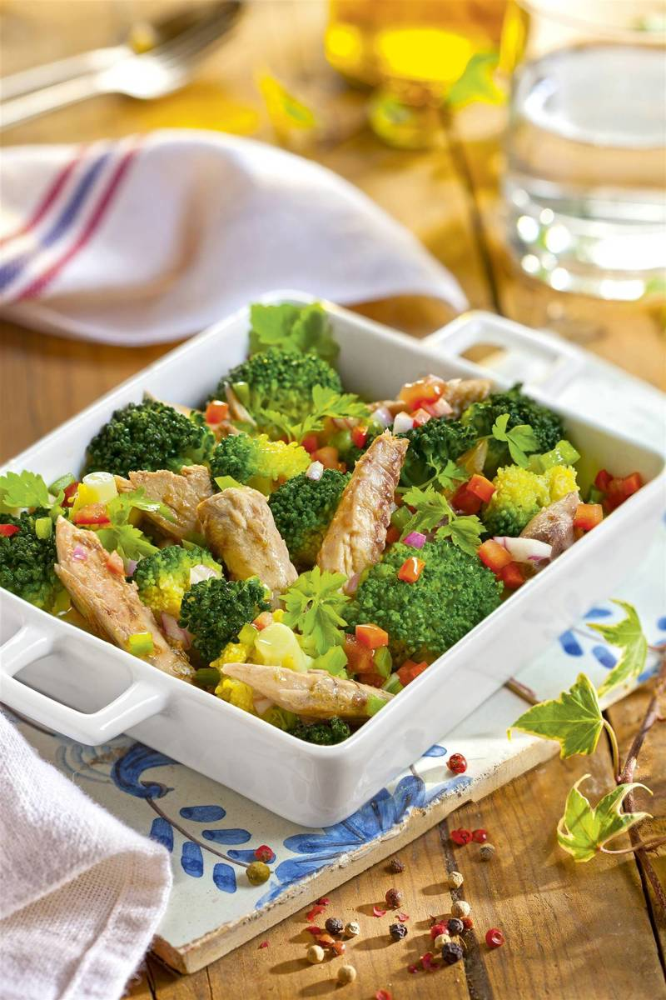
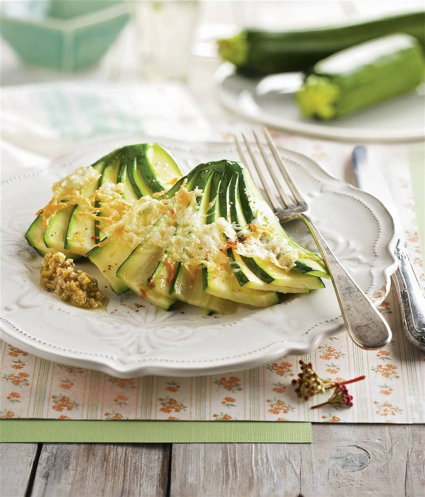

Últimas Recetas

BROCOLI CON VINAGRETA DE HORTALIZAS
El brócoli es una verdura con muchos nutrientes, pero un bajo aporte de calorías. Además, su contenido en grasas es casi mínimo. Ayuda a regular los niveles de colesterol en sangre, contiene vitamina A, B9, C, E, ácido fólico y tiene un gran contenido en fibra. Inclúyelo en tus almuerzos saludables o si estás intentando perder peso. Descubre más deliciosas recetas con brócoli.

ABANICO DE CALABACINES AL PARMESANO
El calabacín es una verdura con grandes beneficios. Es una gran fuente de antioxidantes y aporta vitamina A, E, B y C (esta última si se consume crudo o ligeramente cocinado al vapor). También es diurético y tiene apenas 15 calorías. Esta receta, además de un almuerzo saludable, es fácil y rápida de preparar.
Recomendaciones del Chef
- Incluye una gran variedad de frutas y verduras en tu dieta. Estos alimentos son ricos en nutrientes y fibra, y pueden ayudar a prevenir enfermedades.
- Consume proteínas magras, como pollo, pavo, pescado, huevos, legumbres y tofu. Estos alimentos te proporcionarán energía y te ayudarán a construir y mantener la masa muscular.
- Limita la ingesta de alimentos procesados, como dulces, galletas y refrescos. Estos alimentos pueden ser altos en calorías, azúcares y grasas no saludables.
- Elige carbohidratos complejos, como pan integral, arroz integral y quinoa, en lugar de carbohidratos simples como el pan blanco y los cereales azucarados.
- Asegúrate de beber suficiente agua durante todo el día para mantener tu cuerpo hidratado.
- Cocina tus comidas en casa con ingredientes frescos y saludables. De esta manera, sabrás exactamente lo que estás comiendo y podrás controlar mejor la cantidad de sal, azúcares y grasas que consumes.